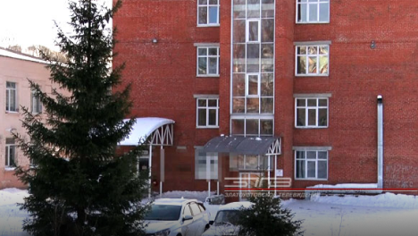
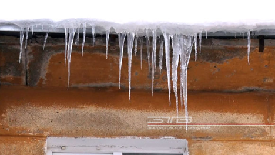
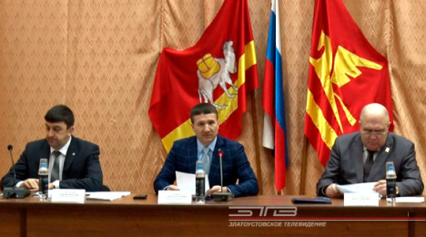

Все новости
 МедицинаОбщество02/02/2021
МедицинаОбщество02/02/2021
Благодаря поддержке предпринимателей. Златоустовские поликлиники оснастили холодильными установками для хранения вакцины
Медицина29/01/2021
Госпитальная база закрыта, учреждение вернётся в «доковидный» режим после дезинфекции. Роддом Златоуста вновь откроет свои двери 8 февраля
Коммуналка29/01/2021
Осторожно, сосульки! Оттепель на этой неделе привела к тому, что на крышах многих домов образовались опасные ледяные наросты
Политика29/01/2021
В четыре раза меньше вопросов, чем обычно. В Златоусте прошло первое в 2021-м году Собрание депутатов

Медицина29/01/2021
Госпитальная база закрыта, учреждение вернётся в «доковидный» режим после дезинфекции. Роддом Златоуста вновь откроет свои двери 8 февраля
Ещё одна главная новость дня — с 8 февраля златоустовский роддом возвращается к привычному формату работы. Госпитальную базу для лечения больных коронавирусной инфекцией переводят...